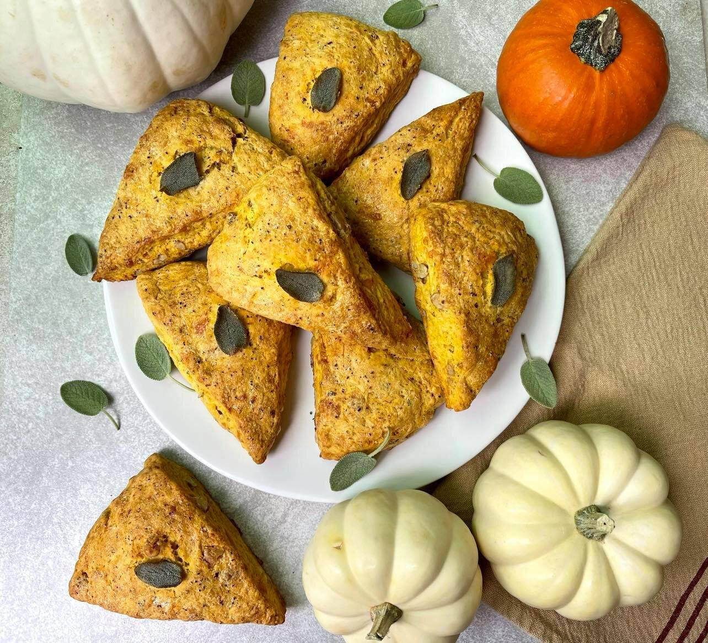

]
How to make some delicious Cheesy Pumpkin Scones with Walnut and Sage

How to make a very delicious scone topped with delicious cheese and pumpkin, sided with walnut and sages?
Description
This is a delicious recipe taken from Allrecipes to be used for The Odin Project as a practise ground.
Recipes
Toppings on the scones
- 2 tablespoons unsalted butter
- 2 tablespoons heavy cream
- freshly cracked black pepper to taste
- 8 leaves fresh sage
Scones
- 2 cups all-purpose flour
- 3 tablespoons brown sugar
- 1 tablespoon baking powder
- ½ teaspoon salt
- ¼ teaspoon garlic powder
- 1/2 cup unsalted butter, frozen and grated
- ½ cup chopped walnuts, lightly toasted
- ½ cup grated Gruyere cheese
- ⅓ cup finely grated Parmesan cheese
- 1 tablespoon finely chopped fresh sage
- ½ cup pumpkin puree
- ⅓ cup heavy cream
- 1 large egg
Directions
- Step 1
Preheat the oven to 400 degrees F (200 degrees C). Line a rimmed baking sheet with parchment paper.
- Step 2
For the topping, melt butter in a pan over medium-low heat. Cook, stirring often, until the milk solids turn golden brown and the butter smells nutty, 10 to 12 minutes. Pour butter and any browned bits into a small bowl and allow to cool to room temperature. Whisk in the heavy cream and set aside.
- Step 3
For the scones, whisk flour, brown sugar, baking powder, salt, and garlic powder together in a large mixing bowl. Add grated butter and work into the flour mixture using your fingertips until well distributed and the mixture feels crumbly/mealy. Using a wooden spoon, stir in walnuts, Gruyere and Parmesan cheeses, and sage, making sure all ingredients are evenly distributed. Place in the refrigerator until needed.
- Step 4
Add pumpkin to a separate small mixing bowl. Using a paper towel, dab the pumpkin puree to soak up as much excess moisture as you can. Whisk in heavy cream and egg until the mixture is evenly combined.
- Step 5
Drizzle the pumpkin mixture over the flour mixture. Stir with a rubber spatula until the flour mixture is thoroughly moistened and a crumbly dough forms; do not overmix.
- Step 6
Using lightly floured hands, gather the dough and gently knead in the mixing bowl until it just comes together. Transfer the dough to a lightly floured surface and form into a 7- to 8-inch-round disc. Cut the disc into 8 equal wedges. Transfer the wedges to the prepared baking sheet.
- Step 7
Generously brush each scone with the brown butter and cream topping mixture and sprinkle with cracked black pepper as desired. Place 1 sage leaf on top of each scone and press gently to adhere.
- Step 8
Bake in the preheated oven until scones are lightly browned, 20 to 23 minutes. Remove from the oven and cool on a wire rack for 5 minutes.
Back to Main Page.